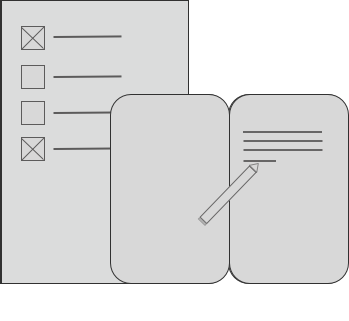
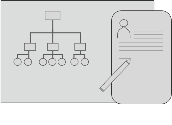

Lauren Short
user researcher + content strategist
I am an innovative problem solver focused on user research and content strategy. My passion is understanding people to better improve the user experience.
About Me
The one constant in my career has always been people. Understanding how people think, getting answers to "why" people do what they do, and helping customers explore new ways to improve the user experience.
I dabble in digital design, photography, but most importantly, I specialize in user research and content strategy. My goal is to create both digital and print media that people can emotionally connect with for a positive user experience.
Portfolio
Startup: Commonwealth Home Services
In order to create a design concept and build a client's startup company website I first needed to define their product goals, identify the target audience, and analyze competition strategies.link to project
Website Redesign: SMART
Migration of a MOSS2007 CMS website to SP2013 including complete site redesign to reduce redundancy, improve accessibility & organization of information, and meet 508 compliance requirements.link to project
App Modernization
Modernization of a 10-year-old mission critical application with over 300 web pages.link to project
Photography
Services
Research
- focus groups
- user interviews
- surveys
- card sorting
Strategy
- competitor analysis
- content audit
- journey mapping
- personas